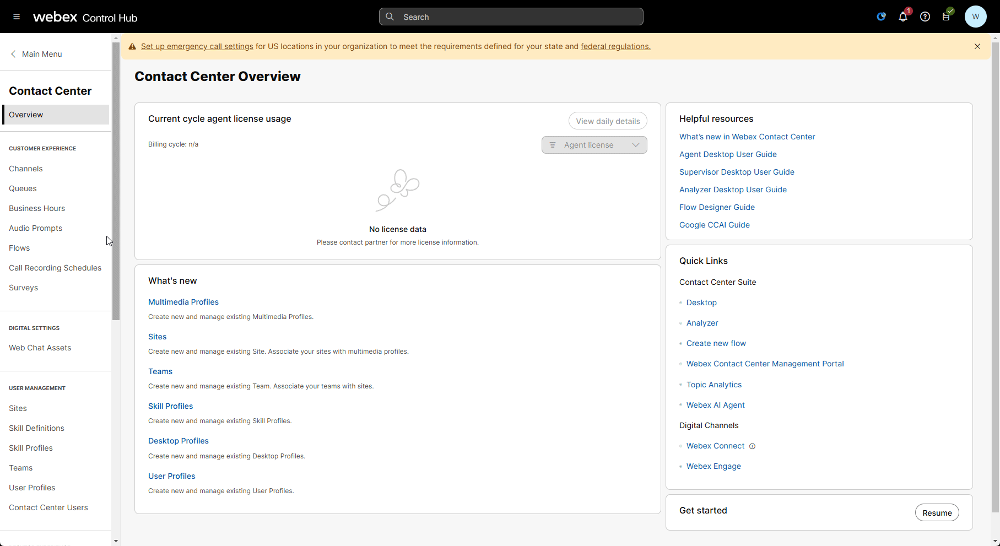
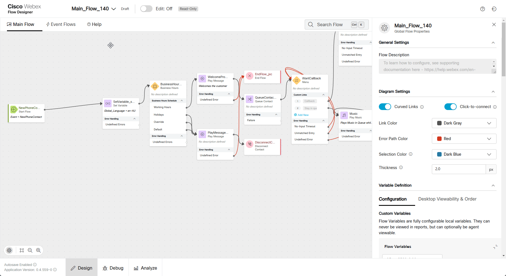

CoreTrack Mission5
Story
In this lab, you will complete a mission to enhance customer feedback collection by integrating a survey into the Webex Contact Center call flow. The lab is designed to be simple yet practical, focusing on minimal configuration within the Flow Designer, while leveraging a preconfigured survey template.
Good to Know [Optional]
Supported Survey Question Types in Webex Contact Center
- Customer Satisfaction (CSAT):
- Purpose: Measure satisfaction with a specific interaction or service.
- Example Question: "On a scale of 1 to 5, how satisfied are you with the service you received today?"
- Use Case: Assess overall satisfaction at the end of a call or interaction.
- Customer Effort Score (CES):
- Purpose: Evaluate the ease of resolving a customer's issue or completing a task.
- Example Question: "On a scale of 1 to 5, how easy was it to complete your task today?"
- Use Case: Identify pain points in the customer journey or process efficiency.
- Net Promoter Score (NPS):
- Purpose: Measure customer loyalty and the likelihood of recommending the service.
- Example Question: "On a scale of 0 to 10, how likely are you to recommend our service to a friend or colleague?"
- Use Case: Gauge long-term customer loyalty and brand advocacy.
Call Flow Overview
- A new call enters the flow.
- The flow executes the logic to enable survey functionality.
- Agent answers the call.
- The flow triggers an event when the agent disconnects from the call.
- The caller remains on the line and hears the survey menu.
Mission Details
Your mission is to:
- Integrate a preconfigured survey into the call flow using the Flow Designer.
- Configure basic logic to determine when to route customers to the survey (e.g., after a call ends).
- Understand how Webex Contact Center supports various survey question types, including CSAT, CES, and NPS.
Note
The survey is prebuilt and includes key questions designed to gather actionable insights from customers. Your task is to focus on configuring the flow and ensuring the survey is triggered seamlessly during the customer journey.
Pre-configured entities
Survey: PCS-2025
System defined GlobalVariable: Global_FeedbackSurveyOptIn.
[Optional] In case you don't want to use pre-configured Survey you can configure your own. Expand below section to create your own Survey otherwise proceed to Build section below
Create your own Survey [Optional]
In Control Hub -> Contact Center open a Survey configuration page under Customer Expirience. Then click Create new survey.
Enter survey name in Survey name field. Make sure IVR survey is selected. Then click next
- Edit Welcome note and Thank you note by uploading the following files. Download files to your desktop prior uploading to survey.

Click on Add a question which is in the middle between Welcome note and Thank you note. Choose either NPS, CSAT or CES type of question.
Upload respective audio prompts. Prompts can be downloaded from shared folder.
Click Next. You can ignore Error Handling configuration page. Click Save*

{kind=link}
Build
-
Switch to the Control Hub then go to Contact Center. Navigate to the Surveys under the Customer Experience section. Locate PCS-2025 Survey and click on it to familiarise yourself with it's configuration.
 -
Switch to the Flow Designer. Open your Main_Flow_Your_Attendee_ID, make sure Edit toggle is ON.
-
Add Global Variable Global_FeedbackSurveyOptIn to your flow. 
-
Drag Set Variable node to canvas:
Activity Name: FeedbackSet
Variable: Global_FeedbackSurveyOptIn
Set Value: true
Delete connection between NewPhoneContact and Set Variable on which we configured Language while doing the Main Lab.
Connect NewPhoneContact to the front of the FeedbackSet node
Connect FeedbackSet to the front of the Set Variable node
-
Open Event FLows tab and locate AgentDisconected node. If you completed previous mission you should have HTTPRequest node connected to it. Delete the connection between HTTPRequest node and DisconnectContact.
-
Drag FeedbackV2 and Play Message
FeedbacV2
SurveyMethod -> VoiceBased: PCS-2025
Connect HTTPRequest to FeedbackV2 node
Connect FeedbackV2 node to Disconnect node
Connect FeedbackV2 Undefined Error to Play Message node
Play Message
Enable Text-To-Speech
Select the Connector: Cisco Cloud Text-to-Speech
Click the Add Text-to-Speech Message button and paste text: Something went wrong on Feedback node. Please call later.
Delete the selection for Audio File
Connect Play Message created to Disconnect Contact node
-
Validate the flow by clicking Validate, Publish and select the Latest version of the flow
{kind=link}
{kind=link}
{kind=link}
{kind=link}
Testing
- Your Agent desktop session should be still active but if not, use Webex CC Desktop application
 and login with agent credentials you have been provided wxcclabs+agent_IDYour_Attendee_ID@gmail.com and become Available
and login with agent credentials you have been provided wxcclabs+agent_IDYour_Attendee_ID@gmail.com and become Available - Make a test call to the Support Number and accept the call by Agent.
- Finish the call by Agent so the caller could stay on the line.
- Now the caller should hear prompts configured in PCS-2025. Complete the survey.
-
To check survey responses, switch to the Control Hub and navigate to the Surveys under Customer Experience section. Locate the PCS-2025 survey and click on the Download button on the right hand side to download a CSV file with the provided Survey responses.
Note
If you create your own survey, as described in the Optional section of this mission, you might not see the survey responses immediately, as there is a delay in edited surveys.
Congratulations on completing another mission where we have learnt how Post Call Survey can be implemented.